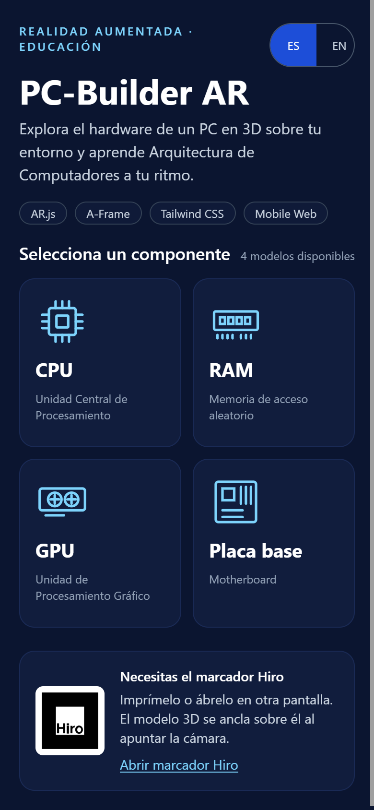
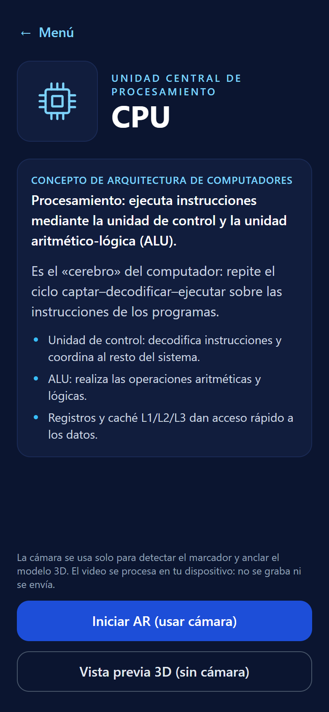
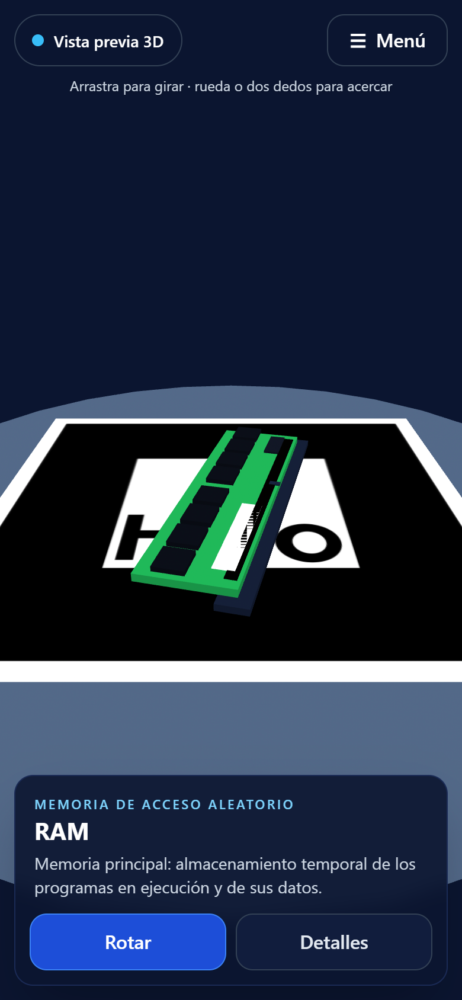
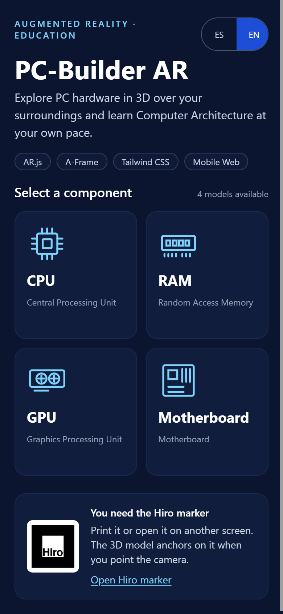
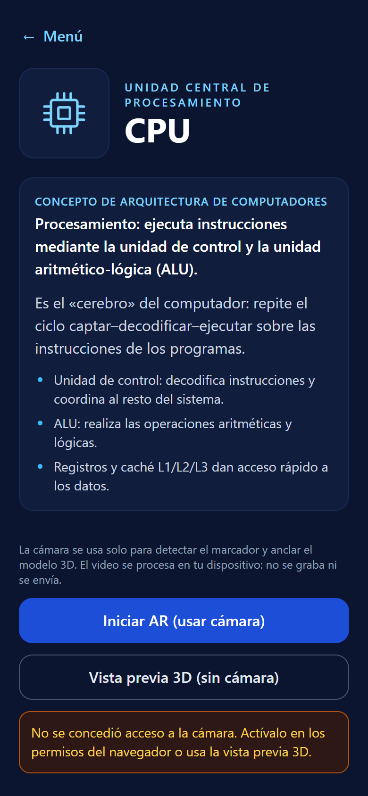

CPU

RAM

GPU

Placa base
Resumen—PC-Builder AR es una aplicación web de realidad aumentada (RA) que permite explorar en 3D una CPU, una memoria RAM, una GPU y una placa base desde el navegador del celular, sin instalar nada, mediante un menú interactivo. Este documento (i) cataloga las funcionalidades del sistema, (ii) presenta evidencia de funcionamiento obtenida con una suite de 28 pruebas automatizadas de extremo a extremo (28/28 aprobadas) que ejercita la aplicación con una cámara simulada que muestra el marcador Hiro, (iii) reporta tres defectos reales que esas pruebas permitieron encontrar y corregir y (iv) argumenta, con medidas del propio proyecto, por qué conviene escalarlo por etapas. Las pruebas no sustituyen la validación en celulares físicos ni un estudio con estudiantes, que son los siguientes pasos.
Abstract—PC-Builder AR is a web-based augmented reality (AR) application that lets learners explore a CPU, RAM, GPU and motherboard in 3D from a mobile browser, with no installation, through an interactive menu. This paper (i) catalogs the system's functions, (ii) provides evidence of operation from 28 automated end-to-end tests (28/28 passed) using a simulated camera showing the Hiro marker, (iii) reports three real defects found and fixed thanks to those tests, and (iv) argues, with project measurements, why the system deserves staged scaling. The tests do not replace validation on physical phones or a study with students, which are the next steps.
Palabras clave / Index Terms—Realidad aumentada, AR.js, A-Frame, Arquitectura de Computadores, pruebas end-to-end, usabilidad, aprendizaje autónomo.
La Arquitectura de Computadores se enseña con figuras de libro y diapositivas que muestran el hardware como imágenes planas y aisladas: el estudiante no percibe tamaño, posición ni relaciones entre CPU, memoria, tarjeta gráfica y placa base, y menos aún si no tiene hardware a la mano. La RA superpone contenido virtual al mundo real en tiempo real [1] y se asocia en educación con mejor comprensión espacial y mayor motivación, aunque su adopción se frena por complejidad técnica y problemas de usabilidad [2], [3]. Una barrera práctica adicional es que muchas soluciones exigen aplicaciones nativas o dispositivos específicos.
PC-Builder AR responde a ese problema con RA en el navegador: AR.js [4] para seguimiento, A-Frame [5] para la escena 3D y Tailwind CSS [6] para una interfaz móvil. El diseño de la interfaz se contrastó con las heurísticas de Nielsen [7] y con WCAG 2.1 [9]; el desarrollo siguió un enfoque ágil integrado con la investigación de diseño y desarrollo (DDR) [11], [12], tal como se describe en el artículo base del proyecto.
Este documento extiende ese artículo con lo que allí quedó como trabajo futuro: evidencia reproducible de funcionamiento y una justificación cuantificada de escalado. Las contribuciones son: un catálogo de funcionalidades trazado a requisitos y pruebas (Sección II); una suite E2E reproducible y sus resultados (Secciones IV y V); un análisis de tres defectos encontrados por la suite (Sección V-C); y un caso de escalado con hoja de ruta, criterios de decisión y riesgos (Sección VI).
La aplicación expone catorce funciones agrupadas en tres pantallas: Menú, Componente seleccionado y Vista AR. La Tabla I las relaciona con los requisitos del artículo (FR1–FR4, NFR1–NFR3) y con los casos de prueba que las verifican.
| ID | Funcionalidad | Req. | Prueba |
|---|---|---|---|
| F01 | Menú con los 4 componentes (CPU, RAM, GPU, placa base) | FR1, FR4 | TC01 |
| F02 | Ficha por componente: concepto de Arquitectura de Computadores, descripción y tres hechos clave | FR2 | TC02 |
| F03 | «Iniciar AR» con aviso previo de por qué se usa la cámara | NFR3 | TC03, TC10 |
| F04 | Detección del marcador Hiro y anclaje del modelo 3D sobre él | FR2 | TC03 |
| F05 | Indicador de estado: «Apunta al marcador» / «Marcador detectado» | NFR3 | TC03 |
| F06 | Rotar: giro automático activable y pausable | FR2 | TC04 |
| F07 | Detalles: etiquetas 3D y lista de partes (4 a 7 por componente) | FR2 | TC05 |
| F08 | Volver al menú en cualquier momento, liberando la cámara | FR3 | TC06, TC07, TC16 |
| F09 | Vista previa 3D sin cámara (arrastrar para girar, zoom) | NFR1 | TC08 |
| F10 | Interfaz bilingüe español/inglés | NFR3 | TC09 |
| F11 | Mensajes claros ante cámara denegada o no disponible | NFR3 | TC10 |
| F12 | Diseño mobile-first, botones ≥ 44 px, controles dentro de la ventana | NFR2, NFR3 | TC13, TC17 |
| F13 | Sin servidores externos; paquete portátil y servidor local | NFR1 | TC11, TC12 |
| F14 | Enlaces directos a un componente o a su vista previa | NFR1 | TC14 |
El usuario nuevo llega a la vista AR en dos toques: elegir el componente y pulsar «Iniciar AR» (más la aceptación de la cámara). En la vista AR solo se muestran los controles esenciales—estado del marcador, Menú, Rotar y Detalles—, en línea con el principio de diseño minimalista [7]. La Fig. 1 resume los estados; las Figs. 3 y 4 muestran las pantallas.
La aplicación es una página estática con tres capas (Fig. 2): la capa 2D (Tailwind CSS) renderiza menú, fichas y controles; la capa 3D (A-Frame) construye los modelos; y la capa AR (AR.js) accede a la cámara y sigue el marcador mediante el enfoque de ARToolKit [10]. Agregar un componente exige una función constructora 3D, una entrada de contenido y un identificador en el menú; no toca el seguimiento.
aria-pressed y role="status" [9].El archivo tests/run-e2e.mjs del repositorio automatiza Chrome mediante el protocolo DevTools, sin dependencias externas. La suite: (1) sirve el proyecto por HTTP; (2) genera un video con el marcador Hiro y lo entrega al navegador como cámara; (3) recorre la aplicación en un viewport móvil emulado; y (4) guarda resultados (results.json) y capturas. Cada caso declara su requisito, lo esperado y lo observado.
| Navegador | Chrome 157 (headless) |
| Viewport | 390×844 px, factor 2×, emulación móvil |
| Cámara | Simulada: marcador Hiro en un cuadro de 640×480 |
| Render 3D | Por software (SwiftShader), sin GPU |
| Datos | Servidor HTTP local; sin red externa |
La evidencia es funcional: verifica que cada acción produce el estado esperado. No mide rendimiento en teléfonos reales (el render es por software), ni calidad de seguimiento con luz, ángulos y cámaras reales, ni aprendizaje. Esas limitaciones se discuten en la Sección VII.
Las 28 pruebas pasaron (Tabla III). Los tiempos de detección miden desde el toque en «Iniciar AR» hasta «Marcador detectado» en el entorno de la Tabla II; el primero incluye el arranque en frío del motor de seguimiento.
| Prueba | Qué se verifica | Resultado observado | Estado |
|---|---|---|---|
| TC01 | El menú lista los componentes | cpu, ram, gpu, motherboard | PASS |
| TC02 ×4 | Seleccionar un componente abre su ficha con título y concepto | 4/4 fichas correctas | PASS |
| TC03 ×4 | Sesión AR: marcador detectado, modelo anclado, cámara activa, etiquetas esperadas | 4/4; etiquetas 4/4/5/7; detección 1197/185/240/209 ms | PASS |
| TC04 | Rotar pausa y reanuda el giro | 0,7 → 0 → 0,7 rad/s | PASS |
| TC05 | Detalles muestra/oculta etiquetas 3D y lista de partes | ON: 5 etiquetas + panel con 5 ítems; OFF: 0 y sin panel | PASS |
| TC06 ×4 | «Menú» desde la vista AR libera la cámara y vuelve al menú | 0 videos, 0 escenas, 0 pistas activas (4/4) | PASS |
| TC07 | Cuatro sesiones AR seguidas con 3 s de pausa en el menú | 4/4 con marcador detectado | PASS |
| TC08 ×4 | Vista previa 3D funciona sin cámara | modelo presente; 0 elementos de video (4/4) | PASS |
| TC09 | Cambio ES→EN actualiza la interfaz | «Select a component», «Motherboard» | PASS |
| TC10 | Sin cámara/permiso: vuelve a la ficha con mensaje claro y sin escena | mensaje «No se concedió acceso a la cámara…» | PASS |
| TC11 | Ninguna petición a servidores externos en toda la sesión | solo el origen local | PASS |
| TC12 | Sin errores de JavaScript ni de consola | 0 errores | PASS |
| TC13 | Todos los botones visibles miden ≥ 44 px | menú 44 · ficha 44 · AR 44 px | PASS |
| TC14 | Enlace directo #gpu+preview abre la vista previa de la GPU | vista previa, título «GPU» | PASS |
| TC16 | Estabilidad: 6 sesiones AR seguidas con pausa de 3 s | 6/6 (172–325 ms) | PASS |
| TC17 | En 390×844 los controles de la vista AR quedan dentro de la ventana | Menú y Rotar visibles en los 4 componentes | PASS |
La Tabla IV reúne medidas objetivas de los modelos y del código. Los triángulos se contaron recorriendo la geometría de cada escena; las líneas, de la función constructora de cada componente. El código propio completo (HTML, CSS y JavaScript) suma 935 líneas (≈ 52 KB); las bibliotecas fijadas ocupan ≈ 3,9 MB y todo el paquete comprimido, 1,5 MB.
| Componente | Entidades | Triángulos | Partes | Líneas |
|---|---|---|---|---|
| CPU | 49 | 490 | 4 | 27 |
| RAM | 18 | 176 | 4 | 22 |
| GPU | 48 | 5 150 | 5 | 33 |
| Placa base | 24 | 218 | 7 | 32 |
La suite no solo confirmó el funcionamiento: reveló tres defectos que una revisión manual no había detectado (Tabla V). Que aparecieran en una sola sesión de pruebas justifica mantener la suite como puerta de calidad en cada cambio.
| # | Hallazgo | Corrección |
|---|---|---|
| D1 | La «vista previa sin cámara» abría la cámara y pedía un archivo a un servidor externo: AR.js inicia su sistema en toda escena A-Frame (TC08: 1 video; TC11: origen extra). | Se protege el sistema de AR.js para que solo actúe si la escena declara arjs. Ahora 0 videos y 0 orígenes externos. |
| D2 | Una segunda sesión AR en la misma página fallaba de forma intermitente tras una pausa (TypeError … idPatt): con pausa de 0,7 s 6/6 sesiones bien, con 3 s fallaron 3 de 6. | Tras una sesión AR, «Menú» y los errores de cámara recargan la página (la cámara se libera antes). TC16: 6/6. |
| D3 | En móvil, AR.js ensanchaba <body> a 4501×3376 px y el viewport de maquetación pasaba a 1560×3376: Menú y tarjeta quedaban fuera de pantalla. | Se fija html sin alterar el tamaño de body (AR.js lo necesita igual al del video). TC17. |
También se corrigieron detalles menores: botones de idioma de 36 px (ahora ≥ 44 px), solicitud de favicon inexistente y enlaces directos que no reaccionaban al cambiar el hash. D3 solo se hizo visible con emulación móvil de 390 px, no con una ventana de escritorio: es un ejemplo concreto de por qué hay que repetir la validación en dispositivos físicos.






La necesidad es concreta: la representación plana del hardware dificulta construir un modelo mental del computador, y la RA ofrece justamente visión espacial, interacción dirigida por el estudiante y aprendizaje autónomo [2], [3]. El diseño sigue el principio de que se aprende mejor con palabras e imágenes que con palabras solas [8]: cada modelo 3D va acompañado de un concepto, una descripción y etiquetas por parte. Además, la herramienta es útil fuera del aula y para quien no tiene acceso a hardware físico.
| Diagramas estáticos | App nativa de RA | PC-Builder AR | |
|---|---|---|---|
| Instalación | Ninguna | Tienda de apps | Ninguna (enlace) |
| Vista espacial 3D | No | Sí | Sí |
| Actualizar contenido | Reeditar material | Nueva versión por plataforma | Publicar archivos |
| Interacción del estudiante | Baja | Alta | Alta (menú, rotar, detalles) |
| Uso sin hardware físico | Sí | Sí | Sí |
Las diapositivas del curso reproducen una estimación de Emergen Research según la cual el mercado conjunto de RA y RV pasaría de 21,40 mil millones de dólares en 2021 a 237,80 mil millones en 2030, con una tasa de crecimiento anual compuesta de 35 % [13]. Se cita como indicio del interés del sector, no como cifra verificada por los autores; la decisión de escalar no depende de ella.
Se propone escalar por etapas, avanzando solo si se cumple el criterio de cada una (Tabla VII). El criterio de usabilidad usa la escala SUS [14] con 68 puntos como referencia de promedio ampliamente usada.
| Etapa | Entregables | Criterio de avance |
|---|---|---|
| 0. Validar | Matriz de dispositivos reales (Android/iOS, gama media/alta); capturas de evidencia; ajuste de iluminación y tamaño del marcador | Marcador detectado y modelo estable en ≥ 90 % de los intentos por dispositivo |
| 1. Piloto | Estudio con un grupo de Arquitectura de Computadores: SUS, tareas guiadas, prueba de conocimiento previa y posterior frente a material estático | SUS ≥ 68; ganancia de aprendizaje no inferior al grupo de control |
| 2. Contenido | Almacenamiento, fuente y refrigeración; «armar el PC» con reglas de compatibilidad (socket, RAM, ranura PCIe); cuestionarios; modelos glTF fieles | Revisión de exactitud por docentes; tareas de ensamblaje resueltas por ≥ 80 % del piloto |
| 3. Plataforma | Compilar Tailwind; modo sin conexión (PWA); integración con LMS y panel docente; reutilizar el motor en otras asignaturas (redes, sistemas operativos) | Adopción por ≥ 2 cursos; mantenimiento con la suite E2E en verde |
PC-Builder AR cumple de forma verificable las funciones que se propuso: menú interactivo, fichas de concepto, vista AR anclada a un marcador, controles de rotación y detalle, liberación de la cámara, vista previa sin cámara, bilingüismo y manejo de errores (28/28 pruebas). La suite reveló y permitió corregir tres defectos reales, lo que respalda su uso continuo como puerta de calidad.
Hay razones sólidas para escalarlo por etapas: casi no tiene barreras de entrada, crece linealmente con el contenido, es liviano, accesible y respeta la privacidad, y su arquitectura aísla la dependencia más frágil. Falta lo decisivo: validar en celulares reales y medir el efecto en el aprendizaje con un piloto. La hoja de ruta (Tabla VII) convierte esos pasos en compuertas explícitas, de modo que la inversión en contenido y plataforma se haga solo cuando la evidencia la respalde.
Código, pruebas y capturas: github.com/ingknarg32/Final-Dise-o. Para repetir las pruebas: node tests/run-e2e.mjs (Node ≥ 22 y Chrome).